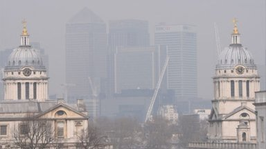

Sign In
Sign In
Made in the 3rd of January Your feelings are with us.
Pollution to spread across England
I live in Japan right now. And I can tell anyone from experiance that living in the country of your target language is not magic. You have to study just like you would back at home.
Watch and Listen
BBC News Channel